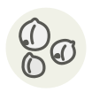

Chickpeas
Pois chiches
| Latin name | Cicer arietinum |
|---|---|
| Family | Legumes & pulses |
| Origin | Fertile Crescent & Anatolia |
| Season (France) | All year |
| Flavour | Nutty · Earthy · Buttery |
| Typical price (France) | 3–5 €/kg |
What it is
Rome’s greatest orator, Cicero, owed his family name to the chickpea (cicer) — an ancestor supposedly had a chickpea-shaped wart, and he refused to change the name, promising to make it glorious instead. He did.
In the kitchen
Keep the cooking water: whipped, it foams like egg white. A tin of chickpeas plus sesame paste and lemon is a five-minute feast.
Goes with
Sesame Lemon Cumin Garlic Spinach Tomato
Same species
Black chickpea Chana dal Chickpea flour
Also used with
Amba Amchur Anardana Argan oil Honeycomb tripe Chaat masala
Something wrong here, or missing? Tell us